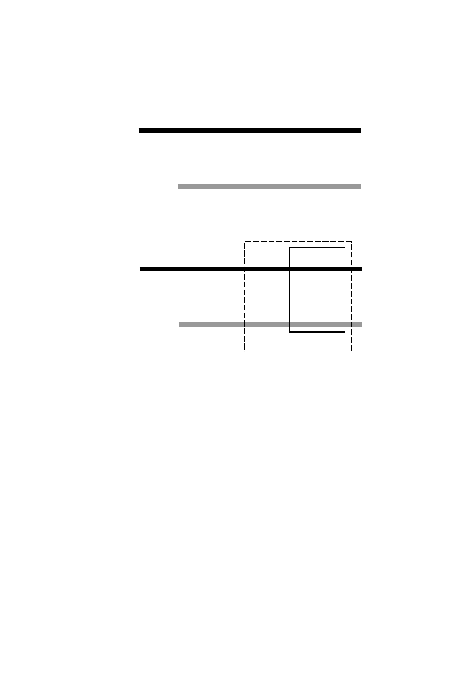

12
1 Biology in a Nutshell
Chromosome j, species C
Chromosome i, species B
A. Conserved synteny
Syntenic segment
Syntenic block
B. Syntenic blocks and segments
Chromosome i, species B
Chromosome j, species C
g
2B
g
1B
g
3B
g
1C
g
2C
g
3C
g
1B
g
2B
g
3B
g
1C
g
2C
g
3C
g
4C
g
5C
g
5B
g
4B
Fig. 1.4.
Co-occurrence of genes or landmark sequences within single chromosomes
or chromosome regions when chromosomes from each of two different organisms are
compared. Panel A: Conserved synteny. In this case,
g
B1
, . . . , g
B3
represent genes in
species B that have homologs
g
C1
, . . . , g
C3
in species C. Panel B: Syntenic segments
and syntenic blocks. In this case,
g
B1
, . . . , g
B
5
and the similar sequences in species C
refer to landmark sequences on the genome, which can be more numerous than genes
to produce a higher marker density. Syntenic segments are conceptually similar to
conserved segments
, except that in the latter case there may be microrearrangements
undetected because of the low marker density.
may contain different base pairs in different representatives of a population,
and this variation can be measured at particular nucleotide positions in the
genomes from many members of that population. This variation, when it
occurs as an isolated base-pair substitution, is called a
single-nucleotide
polymorphism
, or
SNP
(pronounced “snip”).
1.3.3 Biological String Manipulation
As indicated above, DNA is not immutable. During the copying or replication
process, errors can occur (hopefully at low frequency, but at significantly
high frequency in the case of reverse transcription of the HIV genome, for